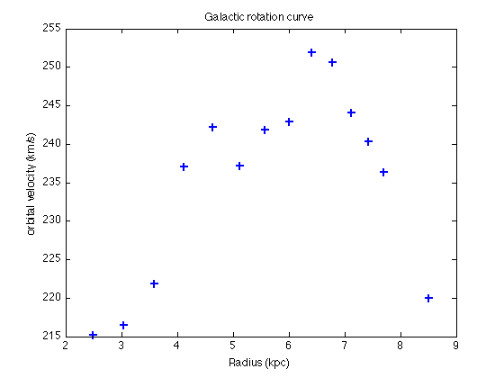
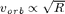
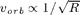
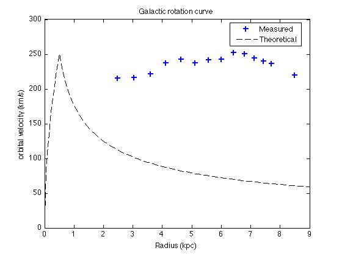

HI Rotation Curve
Contents
Observed curve
In order to plot the rotation curve, you need the orbital velocities of clouds from a large range of galactic radius. Here, we use 13 points as a simple example, which covers galactic longitude from 17 to 65 degrees:
glon = [17 21 ... 65];
To convert glon to radius, note that the sin function in MATLAB takes input in unit rad instead of degree:
R_sun = ... ; % in kpc
R = R_sun*sin( ... );
Then, you need to collect the orbital velocities from all 13 files, and combine your results into one single array, like what we just did to glon. If you followed the directions in Orbital velocity of the cloud, you should now have x(1), x(2), ... x(13) as the smallest frequencies from all 13 files. Therefore,
freq = x;
gives an array freq containing the 13 smallest frequencies. Now you can use the same equations to calculate the tangent and orbital velocities of the 13 files at the same time!
vt = ... ; vorb = ... ;
To include the Sun's orbital radius and velocity, add a 14th element to the arrays:
vorb(14) = v_sun; R(14) = R_sun;
Let's see what the rotation curve looks like:
figure(2); clf; plot( ... ); ...
Theoretical curve
People used to think the Galaxy is a solid disk, with most of its mass around the center. This gives a rotation curve with  in the small radii, and  if R is large. The file TheoCurve.dat on the lab website is an example of the disk rotation curve:
curve = load('TheoCurve.dat');
We can compare the observational results with the theoretical curve:
hold on plot( ... ) ylim([0 300]) legend( ... ,'Location','Best')
Now You should see why people believe there must be dark matter somewhere in the Galaxy!